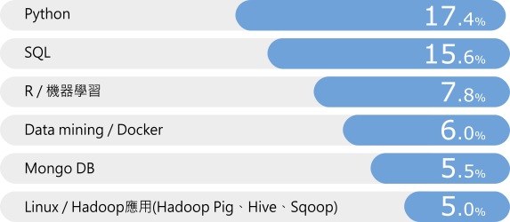
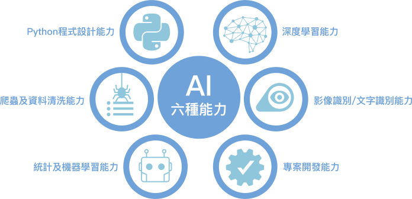
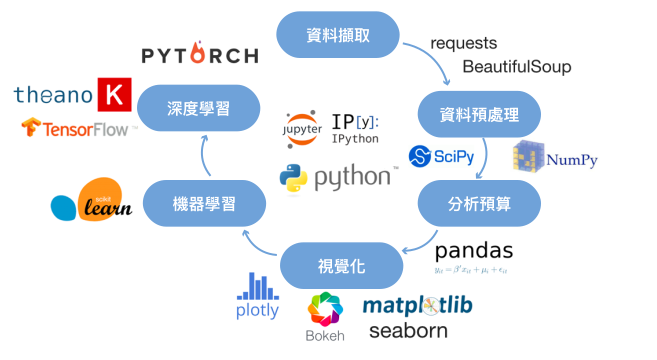
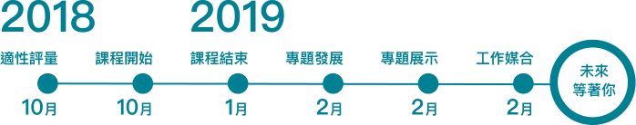

下列特定對象參訓者(20類)，得依規定檢具證明文件申請
- 就業保險被保險人 失業者(自願或非自願離職)
- 獨力負擔家計之失業者
- 中高齡之失業者
- 身心障礙之失業者
- 原住民之失業者
- 低收入戶或中低收 入戶中有工作能力之失業者
- 長期失業者
- 二度就業婦女之失業者
- 家暴及性侵害被害 人之失業者
- 更生受保護人之失 業者
- 新住民之失業者
- 跨國(境)人口販 運被害人之失業者
- 無戶籍國民之失業者
- 無國籍人民之失業者
- 因犯罪被害之失業者
- 因重大災害受災之失業者
- 受貿易自由化影響失業者
- 自立少年之失業者
- 其他經直轄市、縣(市)政府或其委託計畫之工 人員訪視評估確有經濟困難，且有就業意願之失業者
- 逾 65 歲之失業者
考場規定
筆試階段：
- 筆試前，報名者應出示身分及資格之證明文件以供查驗，未符資格者，不得參加筆試；甄試當日未攜帶身分及資格之證明文件者，應簽具並繳交符合資格之切結書，並於錄訓報到時出示證明文件，未出示者，視同放棄參訓資格。
- 應設置二名(含)以上監考人員，筆試測驗開始十五分鐘後不得進入試場應試，視為缺考；缺考或違反筆試考場規定情節重大者，不得參加口試。
口試階段：
- 應設置二名(含)以上之口試委員，並得由就業服務人員或具相關專業之專家學者擔任。
- 口試將採全程錄音或錄影。
- 口試內容應與學員參訓身分、參訓歷史、近半年求職歷程、訓後生涯規劃及適訓綜合評估等項目有關，不得涉及歧視或其他不當言論，並依口試情形綜合評估其適訓狀況。
107年建置「AI人工智慧產業專業人才發展基地」計畫
AI技術應用工程師班勞動部補助80%-100%學費
【本年度僅此 2 班，錯過可惜】面對 AI 產業應用人才職缺需求眾多，正在求職的你苦無入門機會嗎? 緯育TibaMe 團隊與勞動部勞動發展署桃竹苗分署合作，以堅強的師資陣容，專業訓練團隊，規劃與市場接軌的訓練課程、實作練習、團隊專案開發 (team project)，協助你成為更具競爭力的專業人才，資格符合者，勞動部勞動發展署桃竹苗分署將補助 80%學費，特定身分學員，更是 100%全額補助!
※ 勞動部勞動力發展署桃竹苗分署廣告


依據這四年輔導500多位學員就業，廠商對AI技術的需求如下圖
掌握Python是廠商需求殷切的AI技能
掌握Python是廠商需求殷切的AI技能

計畫目的
成為炙手可熱的「數位世代AI科技人才」
全球企業普遍都缺乏「AI 技術應用」的人才，本計畫將培訓學員建立最新AI 科技技能，並參與企業型的專題實作，讓你完訓後立即成為炙手可熱的「數位世代 AI 技術應用人才」。
對剛離開學校尚在找工作，有決心想要投入AI 領域就業的你，特別是理工科系、數學系、統計系、商學院、資工及資管等相關科系，給你自己14週時間參加此 AI 技術應用培訓，會讓你有機會進入 AI 領域的殿堂。有資訊相關工作經驗，目前失業尚在找尋下一個工作機會者，對 AI 技術應用有興趣，也很想往 AI 領域轉換跑道，此 AI 培訓是你第一選擇。
本計畫培訓 AI 六種能力，期許能透過與市場接軌的課程設計、實作練習、團隊專案開發 (team project)，更加值提供線上課程可隨時閱讀 AI 相關知識，協助你養成新世代 AI 技能。

- Python 程式設計能力
- 會使用 Python 環境設置與基本與語法；會用 Python Matplotlib 、Django 進行數據視覺化的能力
- 爬蟲及資料清洗能力
- 會運用 Python 進行資料收集、網路爬蟲、資料清理
- 統計及機器學習能力
- 會用 Scikit-learn 進行如 Logistic Regression、SVM、Decision Tree 等 Machine Learning 的實作
- 深度學習能力
- 會用 Keras-TensorFlow 進行 DNN、CNN、RNN 實作；進一步以 AWS 進行機器學習與深度學習實作
- 影像識別能力/文字識別能力
- 掌握機器學習與深度學習的演算法後，能套用在文字識別、影像識別等技術領域上
- 專案開發能力
- 訓練學員團隊開發專案，強化學員的 AI 開發實戰力
課程特色
本計畫有 237 小時的 AI 學習路徑，規劃成環環相扣 14 週的週末培訓課程，讓你從資料爬蟲及洗滌、統計及機器學習、深度學習、影像識別或文字識別、資料視覺顯示等多個面像切入，以技能實作為培訓方式，讓你學會 AI 相關專業技能，成為 AI 世代的工程師。

課程大綱
{{item.Category}}
{{item.type}}
{{item.hours}}
課程主題
基礎理論篇
進階實作篇
{{list.title}}
{{list.basic}}
{{list.adv}}
TibaMe 加值回饋
本計畫加值再加值，為你在實作教學時有更紮實的知識基礎，由緯育TibaMe 贊助提供 60 小時線上學習單元(超過20,000元)，配合週末實作課程，讓你可依自己程度、時間，隨時補強自己不足的相關知識及技能。
報名資格
- 本國 15 歲以上 30 歲以下失業青年優先參訓。
- 本計畫是勞動部計畫，依法不得招收在職勞工、自營作業者、公司或行(商)號負責人參訓。
筆試+口試錄取培訓學員
- 本計畫學員採甄選錄訓制
- 甄試作業分筆試及口試二階段，分數各占百分之五十。筆試加口試總成績達六十分以上始得錄訓。點我看考場規定
- 預計107/10/24(三)經分署核定後公告錄取名單。
- 筆試時間/地點
- 107/10/16(二) 10:00-12:00
- 國立中央大學電機工程二館(桃園市中壢區中大路300號)
- 筆試考試時間/內容
- 50分鐘
- 單選 10題、3題實作填充
- 筆試評量架構
- 初級程式觀念6題，每題6分、實作填充2題、每題10分
- 中級程式觀念4題，每題8分、實作填充1題、每題12分
- 口試時間
- 。AI影像技術應用工程師班 107/10/18(四) 09:00-16:00
- 。AI文字技術應用工程師班 107/10/19(五) 09:00-16:00
- 國立中央大學電機工程二館：桃園市中壢區中大路300號
- 錄取公告日期
- 107/10/24(三)經分署核定後公告
- 口試評分標準
- 參訓歷史(15分)、服裝儀容及態度(5分)、表達及思考邏輯(5分)、參訓條件(5分)、參訓目的(10分)、就業意願與規劃(10分)
補助資格
- 一般學員(依桃竹苗分署核定為準)
- 學員完訓後，政府補助 80%培訓學費，學員自繳約NT8,000~12,000元，詳細金額依桃竹苗分署核定為準
- 特定對象
- 學員完訓後，政府 100%補助，學員免付學費，得依規定檢具證明文件申請
- 特定對象說明
計畫時程

找到好工作
- Demo Day 安排學員展示專題，邀請廠商看專題及求才
- 結訓前一個月就開始安排媒合就業
- 持續追蹤媒合就業3個月
關於TibaMe在AI領域的就業養成培訓的經驗
緯育 TibaMe 團隊自 2014 年開始 Big Data / AI 就業養成培訓，到現在已經有超過 500 位學員完訓， 這些結訓學員曾完成超過 85 個團隊專題開發，專題領域分佈有金融股市分析、線上行銷效益分析、觀光推薦分析、居住品質分析，音樂作曲推薦、新聞焦點分析、輿情分析、政治透視等等，這些專題獲得求才企業高度肯定與認同，所以結業後學員 每班就業率都在 87%以上。